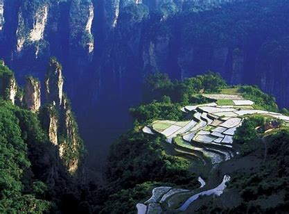
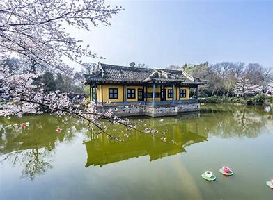

Badaling Great Wall is located at the north exit of Jundu Shangou Ancient Road, Yanqing District, Beijing. It is an important part of the Great Wall, a great defense project in ancient China, and is a pass of the Great Wall of the Ming Dynasty
After the completion of the Taihu Eighteen-Bay Wetland Landscape Belt, it has created a good ecological environment for birds and fish, and has become their paradise, especially the frequent visit of egrets, which is known as the "environmental monitoring
bird", adding vitality to the wetland landscape belt. Many egrets frolic, forage, and "appreciate lotuses" in the wetlands, hovering in the air, becoming a beautiful scenery.
In September 1982, Zhangjiajie National Forest Park became the first national forest park in China. In August 1988, Zhangjiajie Wulingyuan Scenic Area was listed as a national key scenic spot; In 1992, the Wulingyuan Scenic Area, composed of three major
scenic spots including Zhangjiajie National Forest Park, was listed as a World Natural Heritage Site by UNESCO; In February 2004, it was listed as one of the world's first "Global Geoparks"